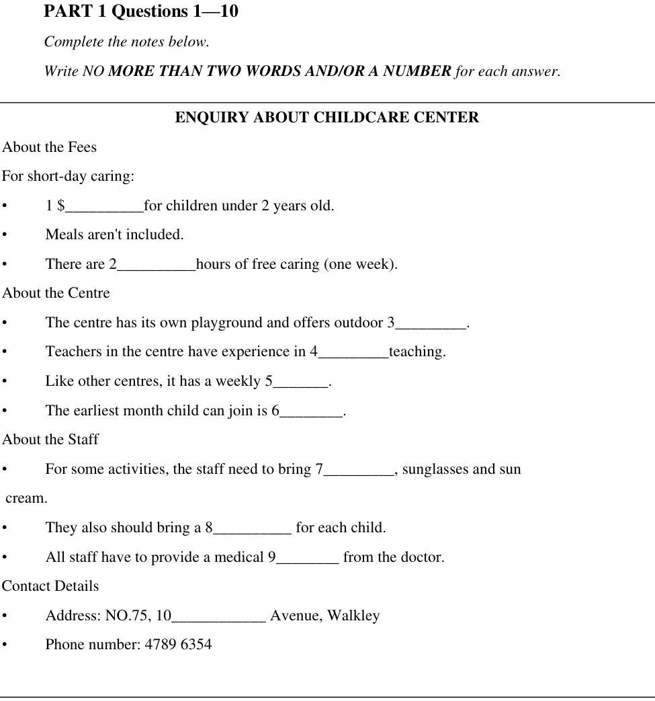
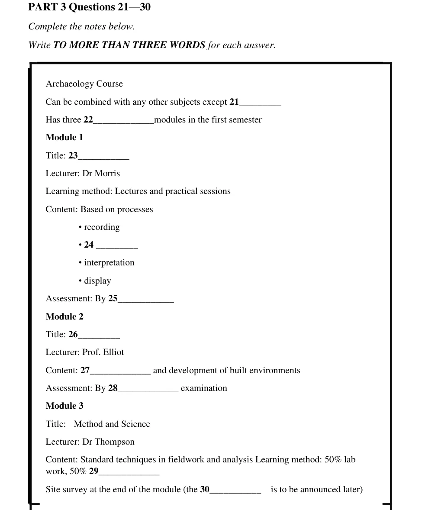

Recent Actual Test 7 · Listening Test 6
Listening and questions
Section 1Questions 1–10

Section 2Questions 11–20
Questions 11–16
Choose the correct letter A, B or C.
Coconut Beach Resort
11 Who are suitable for Coconut Beach Resort?
12 Which type of room does Anna prefer?
13 Which facility was recently built?
14 What impressed Anna most?
15 Why do the visitors like the rainforest exploration?
16 The Sound of the Birds is only opened on
Questions 17–18
Choose TWO letters, A-E.
Which TWO facilities does the resort centre provide?
Questions 19–20
Choose TWO letters, A-E.
In the tour of visiting educational aboriginal tribe, visitors can
Section 3Questions 21–30

Section 4Questions 31–40
Questions 31–33
Choose the correct letter, A, B or C.
31 What impact does Marc Prensky believe digital technology has had on young people?
32 ‘Digital immigrants’ tend to access computers
33 What example is given of having a ‘digital accent’?
Questions 34–40
Which theorist makes each of the following points?
Write the correct letter, A, B or C, next to Questions 34-40.
Theorists
- A Allen
- B James
- C Vander
Points made
34 Current teaching methods don't work.
35 Many students don't understand computers.
36 Computer technology doesn't interest all students.
37 Students can still learn the traditional way.
38 Students still need to learn research skills.
39 We should use computer games to teach.
40 Computers can't replace educators.
Check your answers
Marking ignores capital letters and accepts plurals and the usual alternative answers. If your answer is right but not accepted, press My answer is also right under it.